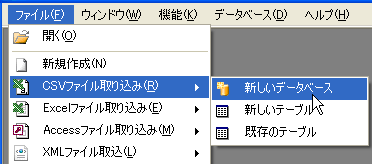
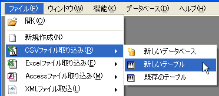
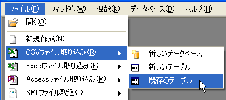
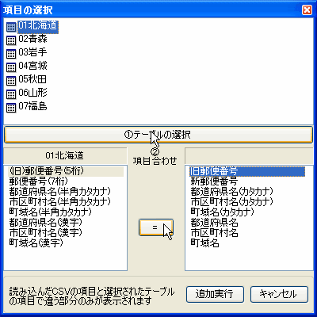

CSVファイルの取り込み
PupSQLiteではCSVの取り込みが可能です。PupSQLiteで扱えるCSVファイルに以下の条件があります。
- 一行目がフィールドとして扱える
- フィールドとデータに改行を含まない
- フィールドに . (ピリオド) ] (半角大カッコ)を含まない
- その他はCSVファイルの一般的な書式に準ずる
新しいデータベースに取り込む

CSVファイルを新しいデータベースに取り込むにはメインメニューのファイル→CSVファイル取り込み→新しいデータベースをクリックします。
その後CSVファイルを元にテーブルの新規作成ウィンドウが表示されるのでフィールドの設定をして「OK」をクリックすればCSVファイルの取り込みが開始されます。
最後にDBファイルの保存場所を指定して完了となります。
新しいテーブルに取り込む

CSVファイルを新しいテーブルに取り込むにはテーブルを作成したいDBを開いた状態でメインメニューのファイル→CSVファイル取り込み→新しいテーブルをクリックします。
その後CSVファイルを元にテーブルの新規作成ウィンドウが表示されるのでフィールドの設定をして「OK」をクリックすればCSVファイルの取り込みが開始されます。
既存テーブルに取り込む
1.項目の選択ダイアログボックスの表示
CSVファイルを既存テーブルに取り込むには取り込み先のテーブルを選択した状態でメインメニューのファイル→ CSVファイル取り込み→既存テーブルをクリックし「項目の選択」ダイアログボックスを表示します。
2.フィールドのマッチング
ダイアログが表示されたら以下の手順でフィールドのマッチングをします。
- 取り込み先のテーブルを選択して「テーブルの選択」ボタンをクリック
- 左に既存テーブルのフィールド、右にCSVのフィールドでマッチしないものだけが表示される。
- 左右のフィールドで対応するものをそれぞれ選択し「＝」ボタンをクリック
- 3の作業を左右どちらかのフィールドがなくなるまで繰り返す
- 「OK」をクリック
上記操作が完了するとCSVデータの取り込みが開始されます。
CSVのフィールドが残った状態ではそのフィールドのデータは取り込まれません。
また、取り込み時にエラーがあった場合はエラーのあったレコードのみを最後にCSVファイルとして出力します。